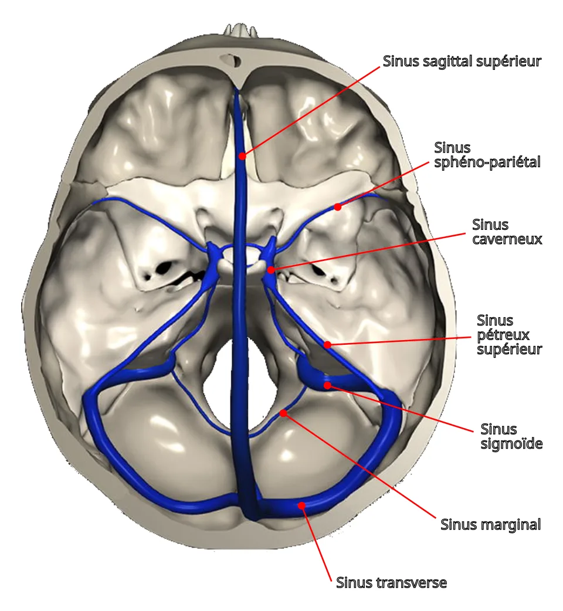
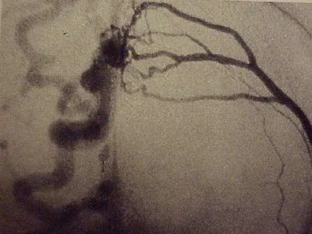

DX.10 — Fistule artérioveineuse durale
La fistule artérioveineuse durale se signale à l’oreille par un acouphène pulsatile synchrone du pouls, qui impose toujours une imagerie S4S6. Son danger tient au drainage veineux cortical, que seule l’angiographie démontre, si bien que la décision de traiter repose sur ce classement S1S3.
1. Définition
La fistule artérioveineuse durale est une malformation vasculaire acquise, faite d’une connexion pathologique entre les artères et les veines des méninges, parfois aussi les veines du cerveau ou de la moelle S1. On la nomme aussi fistule durale, ou malformation artérioveineuse méningée ; le sang artériel s’y jette directement dans les veines, sans passer par les capillaires S1S2.
2. Épidémiologie (Suisse, puis Europe)
La fistule durale reste rare : elle représente environ 10 à 15 % de toutes les malformations artérioveineuses selon l’Inselspital de Berne S1. Elle survient surtout pendant la cinquième décennie et reste extrêmement rare chez l’enfant ; sa prévalence réelle demeure inconnue S1S3. Le tableau des chiffres réunit les données suisses et européennes, puis l’histoire naturelle montre pourquoi le drainage veineux décide du pronostic S1S3S5.
Fistule durale : chiffres, du plus local au plus large
| Donnée | Population et lieu | Année | Source |
|---|---|---|---|
| Environ 10 à 15 % des malformations artérioveineuses | Inselspital, Berne | Page consultée en 2026 | S1 |
| Pic de fréquence dans la cinquième décennie, extrême rareté chez l’enfant | Inselspital, Berne | Page consultée en 2026 | S1 |
| Moins de 10 % des malformations vasculaires cérébrales | Revue de la thèse genevoise | 2024 | S3 |
| Taux de détection de 0,29 pour 100 000 adultes par an | Japon, 1998 à 2002 (source non européenne citée par la thèse) | 2024 | S3 |
| Siège surtout sigmoïde et transverse en Europe et aux États-Unis | Revue de la thèse genevoise | 2024 | S3 |
| Acouphènes pulsatiles : moins de 10 % des acouphènes | Revue du Centre hospitalier universitaire (CHU) de Tours | 2020 | S4 |
| Cause de l’acouphène pulsatile inconnue dans 20 à 30 % des cas | Revue du CHU de Tours | 2020 | S4 |
Aucune incidence suisse n’a été retrouvée ; le seul taux de détection disponible vient du Japon et se signale donc comme non européen S3.
La localisation sigmoïde et transverse, fréquente en Europe, explique le lien avec l’oreille : ces sinus bordent le rocher S3S4.
Histoire naturelle selon le drainage veineux
| Situation | Risque chiffré | Évolution | Source |
|---|---|---|---|
| Sans drainage veineux cortical (Borden I) | Rupture inférieure à 0,6 % par an | Guérison spontanée chez 13 % des patients | S1 |
| Sans drainage cortical, transformation | Environ 1,4 % par an | Passage vers une fistule avec drainage cortical | S1 |
| Drainage cortical, asymptomatique ou acouphène seul | Rupture d’environ 2 % par an | Risque nettement plus élevé | S1 |
| Drainage cortical avec congestion veineuse | Rupture d’environ 10 % par an | Déficits neurologiques possibles | S1 |
| Après une hémorragie cérébrale | Environ 46 % de nouvelle hémorragie dans l’année | Traitement urgent | S1S2 |
| Drainage leptoméningé avec ectasie veineuse | Jusqu’à 27 % par an | Pronostic le plus sévère | S3 |
| Après une première hémorragie | Récidive précoce de 35 % dans les quinze premiers jours | Traitement rapide justifié | S3 |
Une fistule peut aussi s’occlure spontanément, évolution qui n’est pas exceptionnelle ; la surveillance garde donc sa place dans les formes bénignes S3.
3. Physiopathologie
Les capillaires de la dure-mère sont anormalement élargis, voire absents ; le sang artériel passe donc directement dans les veines, dont le débit et la pression augmentent S2. La fistule peut suivre un traumatisme crânien important ou une thrombose d’une veine cérébrale, mais son origine reste le plus souvent indéterminée et non héréditaire S2. Le tableau des mécanismes associe chaque symptôme à son support anatomique, de l’acouphène à l’hémorragie S3S4.
Mécanismes et symptômes qui en découlent
| Mécanisme | Ce qui se passe | Symptôme | Source |
|---|---|---|---|
| Flux turbulent dans la veine de drainage | Le sang artérialisé tourbillonne près du rocher | Acouphène pulsatile, d’autant plus fort que le débit est élevé | S3S4 |
| Hyperpression du sinus | Moindre résorption du liquide cérébrospinal | Hypertension intracrânienne | S3 |
| Reflux dans les veines corticales | Une veine supporte mal la pression artérielle | Hémorragie, surtout intraparenchymateuse | S4S3 |
| Congestion veineuse | Hypertension veineuse de nature ischémique | Déficit focal, déclin cognitif | S3S2 |
| Vol artériel | Les artères méningées nourrissent aussi les nerfs crâniens | Paralysie d’un nerf crânien | S3 |
| Drainage périmédullaire | Stase veineuse dans la moelle | Troubles de la marche, paraparésie | S1S5 |
L’acouphène est plus fréquent lorsque la fistule draine dans un sinus voisin de l’os pétreux ; le sinus sigmoïde et le sinus transverse sont donc les sièges typiques S3.
Le siège du shunt dans les feuillets de la dure-mère et l’enchaînement causal se lisent dans deux fenêtres : sièges du shunt et genèse et évolution S3.
Sièges du shunt dans la dure-mère
| Type | Siège du shunt | Artères afférentes | Drainage | Source |
|---|---|---|---|---|
| Ostéo-durale | Feuillet externe sous-périosté de la dure-mère | Branches trans-osseuses, souvent occipitale, temporale superficielle ou pharyngée ascendante | Sinus dural | S3 |
| Duro-durale | Feuillet interne, à l’interface arachnoïdienne | Branches de l’artère méningée moyenne | Sinus droit ou sinus transverses | S3 |
| Duro-arachnoïdienne et duro-piale | Entre artères durales et veines de l’arachnoïde ou de la pie-mère | Artère méningée moyenne | Veines corticales | S3 |
Le drainage direct dans des veines corticales caractérise le dernier type ; c’est donc lui qui porte le risque hémorragique le plus élevé, ce qui découle de la classification S3S5.
L’apport artériel vient surtout de branches durales de la carotide externe, plus rarement de branches osseuses, tandis qu’un apport pial reste rare S3.
Genèse et évolution de la fistule
| Étape | Ce qui est décrit | Portée pratique | Source |
|---|---|---|---|
| Origine | Lésion acquise à l’âge adulte dans la plupart des cas | Pas de dépistage familial | S3S2 |
| Facteur déclenchant | Série d’événements après une thrombose d’un sinus dural | Penser à la fistule après une thrombose veineuse | S3S2 |
| Cause traumatique | Traumatisme important, comme une fracture du crâne | Penser à la fistule après un traumatisme crânien grave | S2 |
| Changement de drainage | Surtout après un traitement endovasculaire ou chirurgical, rarement spontané | Contrôle après tout traitement | S3 |
| Occlusion spontanée | Évolution non exceptionnelle | La surveillance peut suffire dans les formes bénignes | S3 |
La physiopathologie n’est pas encore entièrement comprise ; l’hypothèse thrombotique reste la plus citée, sans expliquer tous les cas S3.
Sinus de la dure-mère, vus d’en haut. Cette illustration en couleurs montre la base du crâne en beige et les sinus veineux de la dure-mère en bleu, chacun nommé en français S8.

Le lecteur doit d’abord suivre seul le sinus sagittal supérieur jusqu’au confluent, puis descendre vers les sinus transverses.
Sur la copie annotée, cinq repères situent les sinus utiles à la lecture de l’imagerie.
- Le repère 1 marque le sinus transverse, siège fréquent des fistules en Europe S8S3.
- Le repère 2 marque le sinus sigmoïde, au contact du rocher, si bien qu’une fistule y produit volontiers un acouphène pulsatile S8S3.
- Le repère 3 marque le sinus sagittal supérieur, dont l’hyperpression réduit la résorption du liquide cérébrospinal S8S3.
- Le repère 4 marque le sinus caverneux, dont l’atteinte touche surtout l’œil et prédomine en Asie S8S3.
- Le repère 5 marque le sinus pétreux supérieur, qui longe le bord du rocher S8.
Ce que l’image décide. La carte des sinus guide la lecture de l’imagerie par résonance magnétique (IRM) : un acouphène pulsatile fait regarder d’abord les sinus transverse et sigmoïde S3S4.
4. Démarche diagnostique
La démarche part d’un acouphène pulsatile ou d’un signe neurologique inexpliqué ; elle vise à prouver l’origine vasculaire, puis à classer le drainage veineux S4S1. Le tableau de démarche précise chaque étape, du premier entretien à l’artériographie, avec le résultat qui fait avancer S1S4S6. La fenêtre de place dans le lot rappelle pourquoi cette cause rare passe au deuxième rang des urgences d’exclusion (E2) S1S4.
Démarche diagnostique, du symptôme au type de fistule
| Étape | Question | Geste | Résultat qui fait avancer | Source |
|---|---|---|---|---|
| 1. Rythme | Le bruit bat-il au rythme du pouls ? | Le patient tape le rythme pendant la prise du pouls | Acouphène pulsatile synchrone | S4S6 |
| 2. Objectivation | Le médecin entend-il le souffle ? | Auscultation cardiaque, cervicale et crânienne | Acouphène pulsatile objectif | S4 |
| 3. Origine | La compression cervicale modifie-t-elle le bruit ? | Compression douce et successive des carotides et des jugulaires | Origine vasculaire prouvée | S4 |
| 4. Gravité | Céphalée inhabituelle, déficit, trouble visuel, crise ? | Examen neurologique et visuel | Urgence si déficit ou hémorragie | S2S1 |
| 5. Imagerie non invasive | Existe-t-il un shunt ? | IRM avec séquence 3D en temps de vol (TOF, time of flight) et injection, ou angio-IRM | Artérialisation d’un sinus, artères méningées visibles | S3S4S6 |
| 6. Confirmation | Quel drainage veineux ? | Angiographie par soustraction digitale (DSA) | Classement de Borden et de Cognard | S1S3 |
| 7. Décision | Surveiller ou traiter ? | Discussion multidisciplinaire | Plan de traitement ou de surveillance | S1 |
L’ordre suit la gravité : un déficit neurologique ou une hémorragie font passer directement à l’imagerie en urgence, sans attendre les manœuvres de l’étape 3 S2S3.
Pourquoi la fistule durale est une urgence d’exclusion
| Argument | Contenu | Source |
|---|---|---|
| Symptômes souvent non spécifiques | Le diagnostic est retardé ; la fistule passe souvent inaperçue aux examens standards | S1 |
| Risque hémorragique | Le drainage veineux cortical expose à une hémorragie cérébrale et à des déficits permanents | S1 |
| Signe d’appel auditif | L’acouphène pulsatile peut être le premier symptôme | S1S2 |
| Traitement possible | Les fistules durales sont généralement traitables | S1 |
La phase A place donc la fistule durale juste après la surdité brusque : elle est rare, mais un retard peut coûter une hémorragie évitable, ce qui découle de ces arguments S1.
Le contexte de découverte fixe le rythme de la démarche ; la fenêtre des contextes précise pour chacun la première décision S1S2S6.
Démarche selon le contexte de découverte
| Contexte | Premier examen | Délai | Décision suivante | Source |
|---|---|---|---|---|
| Acouphène pulsatile isolé | IRM ou angio-IRM | Programmé | Angiographie si shunt suspect | S6S3 |
| Hémorragie cérébrale | Angiographie d’emblée devant une hémorragie sous-arachnoïdienne | Urgence | Traitement rapide de la fistule | S3S2 |
| Déficit neurologique ou crise d’épilepsie | Imagerie cérébrale | Urgence | Angiographie, discussion multidisciplinaire | S2S1 |
| Troubles de la marche progressifs | IRM médullaire, puis angiographie sélective | Rapide | Déconnexion microchirurgicale si fistule spinale simple | S1 |
| Signes oculaires | Examen ophtalmologique et imagerie | Rapide | Angiographie | S3 |
| Découverte fortuite sans symptôme | Angiographie pour classer le drainage | Programmé | Surveillance si aucun drainage cortical | S1 |
Les plaintes non spécifiques retardent souvent le diagnostic ; l’Inselspital invite donc à penser à la fistule lorsque aucune autre cause n’est trouvée S1.
5. Anamnèse ciblée et drapeaux rouges
L’anamnèse précise d’abord le caractère pulsatile, puis recherche les signes de gravité : céphalée inhabituelle, déficit, trouble visuel, crise d’épilepsie ou déclin cognitif S2S4. Le tableau d’anamnèse réunit les questions utiles, puis le tableau des drapeaux rouges fixe le délai de chaque situation S1S2S6.
Questions ciblées et leur portée
| Question | Réponse évocatrice | Pourquoi | Source |
|---|---|---|---|
| Le bruit bat-il comme le cœur ? | Oui, synchrone du pouls | Un flux vasculaire turbulent produit ce bruit | S4S3 |
| Le bruit change-t-il en tournant la tête ? | Il diminue | L’acouphène veineux d’une fistule varie avec la position de la tête | S3 |
| Avez-vous eu un traumatisme crânien ou une thrombose veineuse cérébrale ? | Oui | Ce sont les deux causes connues | S2 |
| Avez-vous des maux de tête inhabituels et persistants ? | Oui | La pression veineuse cérébrale augmente | S2 |
| Voyez-vous moins bien, ou double ? | Oui | Troubles visuels et atteinte des nerfs crâniens sont décrits | S1S3 |
| Votre mémoire ou votre concentration ont-elles baissé ? | Oui | Un déclin cognitif rapide peut révéler une fistule | S2 |
| Marchez-vous moins bien depuis des mois ? | Oui | Une fistule spinale provoque des troubles de la marche lentement progressifs | S1 |
Un acouphène pulsatile isolé, sans aucun de ces signes, reste un motif d’imagerie programmée, car le National Institute for Health and Care Excellence (NICE) recommande l’imagerie pour tout acouphène pulsatile S6.
Drapeaux rouges et délai
| Signe | Ce qu’il fait craindre | Délai | Source |
|---|---|---|---|
| Céphalée brutale, déficit, trouble de conscience | Hémorragie cérébrale | Urgence immédiate | S2S1 |
| Déficit neurologique temporaire ou permanent, crise d’épilepsie | Congestion veineuse ou saignement | Urgence | S2 |
| Déclin rapide de la mémoire ou de la concentration | Hypertension veineuse diffuse | Avis neurovasculaire rapide | S2S3 |
| Baisse visuelle, œil rouge et gonflé | Atteinte veineuse orbitaire | Avis ophtalmologique et neuroradiologique | S3 |
| Acouphène pulsatile persistant isolé | Cause vasculaire | Imagerie et orientation spécialisée | S6 |
Le Centre hospitalier universitaire vaudois (CHUV) rappelle qu’une fistule révélée par une hémorragie se traite en urgence, à cause du risque de nouveau saignement S2.
Les symptômes changent avec le siège de la fistule ; la fenêtre des tableaux selon le siège aide à relier la plainte au sinus en cause S1S3.
Tableau clinique selon le siège
| Siège | Plainte dominante | Risque particulier | Source |
|---|---|---|---|
| Sinus transverse et sigmoïde | Acouphène pulsatile | Variable selon le drainage | S3S1 |
| Sinus caverneux | Signes oculaires | Atteinte visuelle | S3 |
| Fosse crânienne antérieure et tente du cervelet | Hémorragie souvent révélatrice | Drainage presque toujours leptoméningé | S3 |
| Sinus sagittal supérieur | Céphalée, signes d’hypertension intracrânienne | Hyperpression liée au débit | S3 |
| Fistule spinale | Troubles de la marche lentement progressifs | Paraparésie, voire paraplégie | S1 |
Une hémorragie révélatrice oriente donc vers un siège antérieur ou tentoriel, alors qu’un acouphène isolé oriente vers les sinus transverse et sigmoïde S3.
6. Examen physique ciblé, région par région
L’examen cherche à objectiver le souffle et à repérer un retentissement neurologique ou visuel ; chaque région a sa fenêtre : oreille, cou et crâne, examen neurologique et œil S4S3.
Région 1 — oreille
| Geste | Attendu dans la fistule durale | Ce qui oriente ailleurs | Source |
|---|---|---|---|
| Otoscopie | Tympan normal | Masse rougeâtre rétrotympanique : tumeur hypervasculaire de la base du crâne | S4 |
| Audiogramme | Souvent sans perte attribuable à la fistule | Surdité de transmission : otospongiose ou déhiscence du canal semi-circulaire supérieur | S4 |
Le tableau étiologique de Tours range l’otospongiose et la déhiscence du canal semi-circulaire supérieur parmi les autres causes d’acouphène pulsatile ; l’otoscopie et l’audiogramme les recherchent S4.
Région 2 — cou et crâne
| Geste | Résultat | Interprétation | Source |
|---|---|---|---|
| Auscultation cardiaque, cervicale et crânienne | Souffle entendu par le médecin | Acouphène pulsatile objectif | S4 |
| Compression douce et successive des carotides et des jugulaires | Bruit modifié | Origine vasculaire prouvée | S4 |
| Faible compression jugulaire homolatérale | Bruit arrêté | Origine veineuse probable | S4 |
| Compression jugulodigastrique | Bruit éliminé ou atténué | Bruit veineux | S3 |
Une compression efficace annonce le plus souvent un acouphène curable, puisque fistules, sténoses et malformations se traitent par voie endovasculaire S4.
Région 3 — examen neurologique
| Domaine | Anomalie recherchée | Signification | Source |
|---|---|---|---|
| Motricité, sensibilité, langage | Déficit focal | Congestion veineuse ou hémorragie | S2S3 |
| Fonctions cognitives | Troubles de la mémoire ou de la concentration | Hypertension veineuse diffuse | S2S3 |
| Nerfs crâniens | Paralysie | Vol artériel ou occlusion veineuse | S3 |
| Marche et membres inférieurs | Paraparésie lentement progressive | Fistule spinale ou drainage périmédullaire | S1 |
Un examen neurologique normal ne rassure pas sur le drainage veineux ; seule l’angiographie précise le risque hémorragique S3.
Région 4 — œil
| Signe | Fréquence dans la série de la thèse genevoise (13 patients) | Mécanisme | Source |
|---|---|---|---|
| Chémosis | 8 patients (61,5 %) | Reflux veineux orbitaire | S3 |
| Baisse de l’acuité visuelle | 5 patients (38,5 %) | Hypertension veineuse ou intracrânienne | S3 |
| Exophtalmie | 5 patients (38,5 %) | Congestion orbitaire | S3 |
| Œdème papillaire | 9 patients (69,2 %) | Hypertension intracrânienne | S3 |
Cette série porte sur des fistules sans atteinte du sinus caverneux, recrutées entre 2000 et 2015 ; un fond d’œil s’impose donc même hors du sinus caverneux S3.
7. Approche syndromique
La fistule durale se range dans le syndrome d’acouphène pulsatile synchrone, dont les causes sont artérielles, veineuses ou autres S4. Le tableau syndromique classe ces causes et précise le critère qui sépare la fistule des autres diagnostics du lot S4S6.
Acouphène pulsatile : causes et critères discriminants
| Origine | Cause | Indice clinique | Examen qui tranche | Source |
|---|---|---|---|---|
| Artérielle | Fistule durale | Souffle, signes neurologiques possibles | IRM TOF, puis angiographie | S4S3 |
| Artérielle | Sténose carotidienne | Souffle cervical | Imagerie des troncs supra-aortiques | S4 |
| Artérielle | Malformation artérioveineuse | Signes neurologiques | IRM et angiographie | S4 |
| Veineuse | Sténose du sinus latéral | Bruit arrêté par compression jugulaire | IRM avec injection | S4 |
| Autre | Tumeur hypervasculaire de la base du crâne | Masse rétrotympanique | Scanner des rochers, puis IRM | S4S6 |
| Autre | Otospongiose, déhiscence du canal semi-circulaire supérieur | Surdité de transmission | Scanner des rochers | S4 |
Un acouphène non synchrone du pouls oriente ailleurs, par exemple vers un myoclonus du voile, et relève d’une IRM cérébrale S6.
Dans le lot S1.12, d’autres diagnostics donnent un acouphène ; la fenêtre de comparaison montre ce qui les sépare de la fistule S6S7.
Acouphène dans les diagnostics du lot
| Diagnostic | Caractère de l’acouphène | Indice associé | Examen | Source |
|---|---|---|---|---|
| Fistule durale (DX.10) | Pulsatile, synchrone du pouls | Souffle parfois audible par le médecin | Imagerie vasculaire | S6S4 |
| Surdité due au bruit (DX.5) | Non pulsatile, souvent après une exposition | Encoche audiométrique | Audiogramme | S7 |
| Schwannome vestibulaire (DX.8) | Unilatéral ou asymétrique, non pulsatile | Surdité asymétrique | IRM des conduits auditifs internes | S6 |
| Otospongiose (DX.3) | Parfois pulsatile | Surdité de transmission | Audiogramme, scanner des rochers | S4 |
| Acouphène symétrique sans autre signe | Non pulsatile, bilatéral | Aucun | Pas d’imagerie | S6 |
Le caractère pulsatile est le pivot de ce tableau : il fait basculer d’un bilan audiologique vers un bilan vasculaire, ce qui découle des recommandations de NICE S6.
Les Hôpitaux universitaires de Genève (HUG) estiment qu’entre 10 et 18 % de la population suisse souffre d’acouphènes ; la forme pulsatile n’en représente qu’une petite part S7S4.
8. Diagnostic positif et critères
Le diagnostic positif repose sur l’angiographie conventionnelle, examen de référence qui montre le shunt et classe son drainage veineux S3S1. Le tableau des classifications rassemble les types de Borden et de Cognard, avec le risque publié pour chacun S3S5.
Classifications de Borden et de Cognard (1995)
| Cognard | Drainage | Évolution publiée | Équivalent Borden | Source |
|---|---|---|---|---|
| Type I | Sinus principal, flux antérograde | Évolution bénigne | Type I | S5S3 |
| Type IIa | Sinus avec reflux dans le sinus | Hypertension intracrânienne dans 20 % des cas de type II | Type I | S5S3 |
| Type IIb et IIa+b | Reflux dans les veines corticales | Hémorragie dans 10 % des cas | Type II | S5S3 |
| Type III | Drainage cortical direct, sans ectasie | Hémorragie dans 40 % des cas | Type III | S5 |
| Type IV | Drainage cortical direct avec ectasie veineuse | Hémorragie dans 65 % des cas | Type III | S5 |
| Type V | Drainage veineux spinal | Myélopathie progressive dans 50 % des cas | Type III | S5 |
Le facteur pronostique essentiel reste l’existence d’un drainage veineux leptoméningé, que seule l’artériographie cérébrale démontre S3.
Ce qui ne suffit pas : une IRM normale n’exclut pas une fistule, car les vaisseaux duraux sont petits et passent souvent inaperçus aux examens standards S1S3.
9. Examens complémentaires
NICE recommande d’offrir une imagerie à toute personne qui présente un acouphène pulsatile ; pour l’acouphène synchrone, l’angio-IRM ou l’IRM viennent en premier S6. Le tableau des examens ciblés donne pour chacun l’indication, le signe recherché, l’interprétation et la conduite, puis la fenêtre de l’angiographie détaille le bilan prétraitement S3S4S6.
Examens ciblés : indication, signe, interprétation, conduite
| Examen | Indication | Signe recherché | Interprétation | Conduite | Source |
|---|---|---|---|---|---|
| IRM cérébrale, séquence 3D TOF | Acouphène pulsatile, examen non invasif essentiel | Artères méningées en hypersignal | Artère méningée normalement invisible : shunt probable | Angiographie | S3 |
| IRM avec injection de gadolinium (T1) | Recherche d’une anomalie veineuse | Artérialisation d’un sinus | Fistule ou sténose veineuse | Angiographie | S4 |
| Angio-IRM ou IRM de la tête, du cou, du rocher et des conduits auditifs internes | Acouphène synchrone avec examen clinique et audiologique normal | Cause vasculaire | Orientation étiologique | Avis spécialisé | S6 |
| Scanner injecté de la tête, du cou et du rocher | IRM impossible | Veines dilatées, rehaussement veineux précoce | Shunt suspect | Angiographie | S6S3 |
| Scanner des rochers | Suspicion d’anomalie osseuse ou de l’oreille moyenne | Tumeur hypervasculaire, déhiscence | Autre cause | Selon la cause | S4S6 |
| Angiographie par soustraction digitale (DSA) | Toute fistule suspectée ; d’emblée devant une hémorragie sous-arachnoïdienne | Shunt, drainage veineux | Type de Borden et de Cognard | Traitement ou surveillance | S3S1 |
Le scanner sans injection montre mal la fistule : les vaisseaux duraux sont petits et paraissent normaux, sauf thrombose du sinus ou veines dilatées S3.
Angiographie : ce que le bilan doit préciser
| Élément | Pourquoi | Source |
|---|---|---|
| Exploration des six axes : deux carotides externes, deux carotides internes, deux vertébrales | Ne manquer aucune artère afférente | S3 |
| Première série opacifiant la carotide commune | Recommandée avant les injections hypersélectives | S3 |
| Type de drainage veineux | Il conditionne le risque neurologique | S3 |
| Relations avec les veines du cerveau sain | Les veines leptoméningées normales doivent être respectées | S3 |
| Origine des artères afférentes | Elle conditionne la faisabilité de l’embolisation artérielle | S3 |
| Siège sinusien de la fistule | Il conditionne la faisabilité de l’embolisation par voie veineuse | S3 |
L’angiographie a donc deux buts, évaluer l’angioarchitecture et définir la stratégie, ce qui explique sa réalisation systématique avant toute décision S3.
Le scanner, souvent fait en premier aux urgences, porte parfois des signes indirects ; la fenêtre des signes indirects les rassemble S3.
Signes indirects d’une fistule à l’imagerie
| Signe | Examen | Ce qu’il évoque | Source |
|---|---|---|---|
| Rehaussement précoce d’une structure veineuse au temps artériel | Scanner ou IRM injectés | Shunt artérioveineux, parfois seul indice | S3 |
| Veines parenchymateuses dilatées | Scanner injecté | Flux rétrograde par hyperpression veineuse | S3 |
| Élargissement du foramen spinosum | Scanner | Artère méningée moyenne afférente | S3 |
| Artère occipitale subtilement élargie | Scanner ou IRM | Afférence de la fistule | S3 |
| Veine ophtalmique supérieure élargie d’un côté | Scanner ou IRM | Hyperpression du sinus caverneux | S3 |
| Thrombose d’un sinus dural | Scanner ou IRM | Terrain de fistule | S3 |
Ces signes sont subtils et inconstants ; leur absence ne dispense donc pas d’une IRM dédiée puis d’une angiographie si le doute persiste S3S6.
Angiographie d’une fistule durale du sinus sagittal supérieur. Cette angiographie réelle en niveaux de gris, seule image angiographique libre trouvée, montre une fistule durale qui draine dans les veines sous-arachnoïdiennes S9.

Le lecteur doit d’abord suivre seul les artères fines venues de la droite, puis repérer la masse sombre et les veines tortueuses à gauche.
Sur la copie annotée, trois repères suivent le sang de l’artère afférente à la veine de drainage.
- Le repère 1 montre les artères méningées afférentes, élargies, qui convergent vers la fistule S9S3.
- Le repère 2 montre le point de fistule, où l’opacification veineuse apparaît dès le temps artériel S9S3.
- Le repère 3 montre une veine de drainage dilatée et tortueuse, signe d’un drainage cortical à haut risque S9S5.
Ce que l’image décide. Un drainage dans les veines corticales impose une interruption de la connexion, et non une simple surveillance S1.
10. Arbre décisionnel
L’arbre décisionnel commence par la gravité clinique, passe par la preuve vasculaire, puis par le drainage veineux, qui décide de la conduite S2S4S1. Le tableau décisionnel reprend ces nœuds un par un et précise, pour chaque réponse, l’examen ou le geste suivant S1S6.
- Une céphalée brutale, un déficit ou une crise imposent une imagerie en urgence, car une hémorragie se traite sans délai S2.
- Un acouphène pulsatile isolé justifie une imagerie programmée, puisque NICE l’offre à toute personne concernée S6.
- Une IRM qui montre des artères méningées ou un sinus artérialisé conduit à l’angiographie S3S4.
- Un drainage sans reflux cortical permet la surveillance, ou un traitement endovasculaire si l’acouphène gêne S1.
- Un drainage veineux cortical impose d’interrompre la connexion entre l’artère et la veine S1.
Arbre décisionnel détaillé
| Nœud | Si oui | Si non | Source |
|---|---|---|---|
| Hémorragie cérébrale ou déficit aigu ? | Traitement en urgence | Nœud suivant | S2 |
| Acouphène pulsatile synchrone ? | IRM ou angio-IRM | IRM cérébrale si acouphène non synchrone | S6 |
| Shunt visible ou suspect à l’IRM ? | Angiographie à six axes | Autres causes du tableau syndromique | S3S4 |
| Drainage veineux cortical (Borden II ou III) ? | Interruption de la connexion, souvent microchirurgicale à Berne | Nœud suivant | S1 |
| Fistule sans drainage cortical, symptomatique ? | Traitement endovasculaire possible pour réduire le débit | Pas de traitement, imagerie régulière | S1 |
Le premier nœud protège contre le retard d’une hémorragie ; le dernier évite au contraire un traitement inutile d’une fistule bénigne S2S1.
11. Prise en charge selon les recommandations suisses
11.A But
Le traitement vise à prévenir ou contrôler les symptômes, surtout l’hémorragie ; la déconnexion du reflux veineux cortical compte davantage que la guérison angiographique S2S3. Dans les fistules sans drainage cortical, le but devient le confort : diminuer le débit pour soulager l’acouphène, sans nécessairement fermer la fistule S1.
11.B Moyens
Trois moyens existent : l’embolisation endovasculaire, la déconnexion microchirurgicale et la radiochirurgie ; leur choix est individuel et se discute en équipe multidisciplinaire S1S3. Le tableau des moyens précise l’indication, la technique et la limite de chacun, puis le traitement structuré décrit la conduite selon le type S1S2S3.
Moyens thérapeutiques
| Moyen | Indication | Technique | Limite | Source |
|---|---|---|---|---|
| Embolisation transartérielle | Traitement le plus courant ; palliatif possible pour réduire le flux | Microcathéter jusqu’à la fistule, colle ou agent non adhésif | Risque pour les nerfs crâniens nourris par les artères méningées | S3S2 |
| Embolisation transveineuse | Accès par le sinus lorsque la voie artérielle est risquée | Occlusion rétrograde du point fistuleux | Infarctus veineux si le sinus draine aussi le cerveau sain | S3 |
| Déconnexion microchirurgicale | Fistule avec drainage cortical à Berne ; fosse antérieure et tente du cervelet | Section de la veine de drainage à son origine, neuronavigation | Geste neurochirurgical ouvert | S1S3 |
| Radiochirurgie stéréotaxique | Certaines fistules, surtout bénignes | Irradiation ciblée | Long délai avant la résolution | S3S1 |
| Abstention et imagerie | Fistule sans drainage cortical, découverte fortuite, asymptomatique | Contrôles d’imagerie réguliers | Transformation possible vers un grade plus élevé | S1 |
L’embolisation se pratique sous anesthésie générale par l’artère ou la veine fémorale au pli de l’aine, et l’assurance de base (LAMal) la prend en charge S2.
Les agents emboliques (coils, n-butyl-cyanoacrylate, copolymère d’éthylène-vinyle alcool) sont des dispositifs médicaux, hors de toute information professionnelle suisse (AIPS) ; le cours ne donne donc aucune dose médicamenteuse S3.
Traitement structuré selon le type de fistule
| Situation | Moyen retenu | Délai | Contrôle | Critère d’échec | Source |
|---|---|---|---|---|---|
| Fistule révélée par une hémorragie | Traitement de la fistule | Urgence, risque de nouveau saignement | Angiographie de contrôle | Reflux cortical persistant | S2S3 |
| Drainage cortical sans hémorragie | Interruption de la connexion, microchirurgie le plus souvent à Berne | Programmé sans tarder | Angiographie à 6 mois dans la série genevoise | Shunt ou reflux résiduel | S1S3 |
| Sans drainage cortical, acouphène invalidant | Embolisation pour réduire le débit | Non urgent | Évolution de l’acouphène et imagerie | Acouphène persistant gênant | S1S2 |
| Sans drainage cortical, asymptomatique | Aucun traitement | Sans objet | Imagerie régulière | Apparition d’un drainage cortical | S1S2 |
| Fistule spinale simple | Déconnexion microchirurgicale | Programmé | Marche et force des membres | Aggravation de la myélopathie | S1 |
Dans la série de Davies citée par la thèse, les patients dont le reflux leptoméningé persistait après un échec ont tous développé une hypertension intracrânienne ou un déficit S3.
Aucun médicament ne ferme une fistule durale ; les traitements symptomatiques d’une crise ou d’une céphalée relèvent des recommandations propres, hors du champ de ce cours, ce qui reste une déduction S1S3.
Le choix de la voie dépend de la localisation ; la fenêtre des voies d’abord précise les situations où la chirurgie l’emporte S3.
Voie d’abord selon la localisation
| Localisation | Voie privilégiée | Raison | Source |
|---|---|---|---|
| Fistule alimentée par la carotide externe, proche d’un sinus | Embolisation, artérielle ou veineuse | Accès sûr et traitement par le sinus | S3 |
| Fosse crânienne antérieure | Microchirurgie souvent plus sûre | Embolie possible dans l’artère ophtalmique, avec risque de cécité | S3 |
| Tente du cervelet | Ligature microchirurgicale plus fréquente | Afférences complexes et drainage leptoméningé sans accès veineux | S3 |
| Sinus thrombosé ou sténosé | Voie transartérielle | Accès veineux compromis | S3 |
| Fistule spinale complexe | Chirurgie et voie endovasculaire combinées au cas par cas | Risques parfois supérieurs à l’histoire naturelle | S1 |
Dans les fistules spinales très complexes et de haut grade, l’Inselspital renonce parfois à traiter, car le risque du geste dépasse celui de la maladie S1.
Complications du traitement endovasculaire
| Complication | Nature | Fréquence décrite | Source |
|---|---|---|---|
| Accident vasculaire ischémique | Occlusion d’une artère normale du cerveau | Rare, potentiellement grave | S2 |
| Rupture de la malformation | Accident vasculaire hémorragique | Exceptionnelle | S2 |
| Handicap ou décès | Paralysie, trouble du langage ou de la vue | Exceptionnel | S2 |
| Hématome au point de ponction | Complication bénigne et temporaire | Possible | S2 |
| Infection urinaire | Complication bénigne et temporaire | Possible | S2 |
Le CHUV juge ces complications moins fréquentes que les risques de la malformation non traitée, ce qui justifie le traitement des formes dangereuses S2.
Les complications du traitement endovasculaire se discutent avant le geste, car l’information du patient fait partie de la décision S2.
L’organisation suisse de la décision suit un parcours précis ; la fenêtre du parcours le résume, du médecin de premier recours au centre neurovasculaire S1S2.
Parcours de soins en Suisse
| Étape | Acteur | Contenu | Source |
|---|---|---|---|
| Suspicion | Médecin de premier recours ou oto-rhino-laryngologiste (ORL) | Acouphène pulsatile ou signe neurologique inexpliqué, imagerie | S6S1 |
| Confirmation | Neuroradiologie | Angiographie et classement du drainage | S3 |
| Décision | Équipe de neurochirurgiens, neuroradiologues et radiothérapeutes | Choix entre surveillance, embolisation, chirurgie ou radiochirurgie | S1 |
| Information | Spécialiste | Bénéfices, risques rares mais graves, alternatives | S2 |
| Traitement | Neuroradiologie interventionnelle ou neurochirurgie | Embolisation sous anesthésie générale, ou déconnexion avec neuronavigation | S2S1 |
| Prise en charge financière | Assurance obligatoire des soins | Embolisation couverte par l’assurance de base | S2 |
À Berne, l’angiographie au vert d’indocyanine et le monitoring peropératoire accompagnent la déconnexion chirurgicale, afin d’en optimiser le résultat S1.
11.C Surveillance
La surveillance dépend du type : imagerie régulière des fistules bénignes non traitées, angiographie de contrôle après traitement, examen neurologique et visuel à chaque visite S1S3. Le calendrier de surveillance donne les échéances publiées et le signe qui change la conduite S3S1.
Calendrier de surveillance
| Échéance | Examen | Signe qui change la conduite | Source |
|---|---|---|---|
| Dans les 3 mois après chaque embolisation | Examen ophtalmologique (série genevoise) | Signe oculaire persistant | S3 |
| 6 mois après le traitement | Angiographie de contrôle | Shunt non occlus | S3 |
| À chaque visite | Examen neurologique avec échelle de Rankin modifiée | Nouveau déficit | S3 |
| Régulièrement, fistule bénigne non traitée | Imagerie de contrôle | Drainage cortical apparu, transformation d’environ 1,4 % par an | S1 |
| Toute nouvelle plainte | Réévaluation clinique | Changement du bruit, céphalée, déficit | S3 |
Une sténose du drainage veineux impose une vigilance accrue, car la fistule peut monter en grade ou perdre sa voie d’accès veineuse S3.
Cognard a observé que cinq fistules « bénignes » sur sept ont développé un drainage cortical à l’angiographie de suivi, ce qui justifie une surveillance rigoureuse S3.
11.D Pronostic
Le pronostic dépend du drainage veineux : favorable sans reflux cortical, sévère avec drainage cortical, surtout en cas d’ectasie veineuse S4S5. Dans la série de Davies, les symptômes s’amélioraient ou disparaissaient chez 81 % des patients sans reflux non traités, contre 86 % des patients traités S3. Un acouphène pulsatile d’origine vasculaire, modifié par la compression cervicale, est curable dans la plupart des cas S4.
12. Prévention
Aucune prévention primaire n’est décrite, puisque l’origine reste le plus souvent indéterminée et non héréditaire S2. La prévention porte donc sur le diagnostic précoce et la surveillance ; la fenêtre de prévention précise ses trois niveaux S1S6.
Prévention secondaire et tertiaire
| Niveau | Mesure | But | Source |
|---|---|---|---|
| Secondaire | Imagerie de tout acouphène pulsatile | Ne pas manquer une fistule silencieuse | S6 |
| Secondaire | Penser à la fistule devant une marche difficile, une céphalée ou un déficit inexpliqués | Raccourcir le délai diagnostique | S1 |
| Secondaire | Imagerie régulière des fistules bénignes | Détecter la transformation à temps | S1 |
| Tertiaire | Traitement rapide après une hémorragie | Éviter la récidive précoce | S3S2 |
| Tertiaire | Angiographie de contrôle après traitement | Confirmer l’occlusion du shunt | S3 |
Après une thrombose veineuse cérébrale ou un traumatisme crânien grave, un nouvel acouphène pulsatile doit faire penser à la fistule, ce qui découle des causes connues S2.
13. Points clés
- La fistule durale relie directement les artères et les veines des méninges ; elle est rare et surtout acquise à l’âge adulte S1S3.
- L’acouphène pulsatile synchrone du pouls est son signe auditif ; NICE impose une imagerie dans tous les cas S4S6.
- L’IRM en séquence 3D TOF est l’examen non invasif essentiel, et l’angiographie reste l’examen de référence S3.
- Le drainage veineux cortical fixe le risque hémorragique, jusqu’à 10 % par an en cas de congestion veineuse S1.
- Une fistule avec drainage cortical se traite ; une fistule bénigne asymptomatique se surveille par imagerie S1.
- Le caractère pulsatile fait basculer le bilan d’un acouphène vers l’imagerie vasculaire, alors qu’un acouphène symétrique isolé n’en demande pas S6.
- Une fistule rompue se traite en urgence, car le risque de récidive précoce est élevé S2S3.
14. Pièges et questions fréquentes à l'examen fédéral suisse
| Question | Bonne réponse | Raison |
|---|---|---|
| Une femme de 52 ans entend un battement synchrone du pouls à droite : faut-il une imagerie ? | Oui, toujours. | NICE offre l’imagerie à tout acouphène pulsatile (point 9) S6 |
| Quel examen non invasif rechercher en premier ? | L’IRM avec séquence 3D TOF. | Les artères méningées y deviennent visibles (point 9) S3 |
| Quel examen confirme le type de fistule ? | L’angiographie par soustraction digitale. | Elle classe le drainage veineux (point 8) S1S3 |
| Que signifie un bruit arrêté par une faible compression jugulaire homolatérale ? | Une origine veineuse. | La compression ne touche pas les artères (point 6) S4 |
| Une fistule Borden I découverte par hasard doit-elle être traitée ? | Non, mais surveillée par imagerie. | Rupture inférieure à 0,6 % par an (point 2) S1 |
| Quel risque hémorragique annuel en cas de congestion veineuse ? | Environ 10 %. | Chiffre de l’Inselspital (point 2) S1 |
| Quel traitement pour une fistule avec drainage cortical selon l’Inselspital ? | La déconnexion microchirurgicale le plus souvent. | Elle interrompt la veine de drainage à son origine (point 11) S1 |
| Un scanner normal exclut-il une fistule durale ? | Non. | Les vaisseaux duraux sont petits et paraissent normaux (point 9) S3 |
| Quel type de Cognard comporte une ectasie veineuse ? | Le type IV. | Hémorragie dans 65 % des cas (point 8) S5 |
| Une fistule rompue peut-elle attendre quelques semaines ? | Non, elle se traite rapidement. | Récidive précoce de 35 % dans les quinze premiers jours (point 2) S3 |
| Un acouphène pulsatile disparaît en comprimant doucement la jugulaire du même côté : que conclure ? | Une origine veineuse, à confirmer par l’imagerie. | Une faible compression épargne les artères (point 6) S4 |
| Pourquoi préférer la chirurgie pour une fistule de la fosse antérieure ? | Pour éviter une embolie dans l’artère ophtalmique. | Elle menace la vision du même côté (point 11) S3 |
| Quand contrôler l’occlusion après embolisation dans la série genevoise ? | Par angiographie à 6 mois. | Elle confirme l’occlusion du shunt (point 11) S3 |
Sources
Toutes les sources ont été consultées le 13.11.2026.
- [S1] Inselspital, Hôpital universitaire de Berne, service universitaire de neurochirurgie. Fistules artério-veineuses durales, page sans date de version affichée (références : Gross et Du 2012 ; Reynolds et al. 2017). neurochirurgie.insel.ch, consulté le 13.11.2026.
- [S2] Centre hospitalier universitaire vaudois (CHUV), service de radiodiagnostic et radiologie interventionnelle. Traitement des fistules durales par embolisation, fiche patient sans date de version affichée. chuv.ch, consulté le 13.11.2026.
- [S3] Botta D. Manifestations oculaires provoquées par les fistules artérioveineuses durales sans implication du sinus caverneux : une série de cas avec revue de la littérature. Thèse de doctorat, Université de Genève, service de neuroradiologie diagnostique et interventionnelle, 2024. doi:10.13097/archive-ouverte/unige:179541. archive-ouverte.unige.ch, consulté le 13.11.2026.
- [S4] Janot K, Ifergan H, Barrot V, Maldonado I, Bibi R, Boulouis G, Herbreteau D (CHU de Tours, France). Acouphènes pulsatiles : rôle du neuroradiologue interventionnel. Presse Med Form 2020;1:474-477, texte intégral lu. chu-tours.fr, consulté le 13.11.2026.
- [S5] Cognard C, Gobin YP, Pierot L, et al. (hôpital Lariboisière, Paris). Cerebral dural arteriovenous fistulas: clinical and angiographic correlation with a revised classification of venous drainage. Radiology 1995;194(3):671-80, résumé lu (PubMed 7862961). doi:10.1148/radiology.194.3.7862961. doi.org, consulté le 13.11.2026.
- [S6] National Institute for Health and Care Excellence (NICE), Royaume-Uni. NG155 — Tinnitus: assessment and management, 11.03.2020. nice.org.uk, consulté le 13.11.2026.
- [S7] Hôpitaux universitaires de Genève (HUG), service d’ORL et de chirurgie cervico-faciale. Acouphènes, mise à jour du 26.02.2025. hug.ch, consulté le 13.11.2026.
- [S8] Jmarchn. Dural sinuses-fr (Sinus de la dure-mère), CC BY 4.0, Wikimedia Commons. commons.wikimedia.org, consulté le 13.11.2026.
- [S9] Borden JA (États-Unis, source non européenne). DAVF-SSS-IIIb — Dural AVF of superior sagittal sinus draining into subarachnoid veins, 27.02.2006, CC BY-SA 2.5, Wikimedia Commons. commons.wikimedia.org, consulté le 13.11.2026.